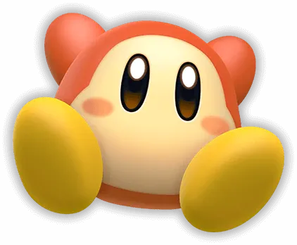

푸푸푸랜드의 다양한 곳에 살고 있는 이상한 생명체.대부분은 우호적이지만, 어떤 웨이들 디는 디디디 대왕을 섬긴다고도 합니다.

별의 커비부터 최신작인 별의 커비 Wii 디럭스까지도 계속 등장하고 있는 가장 기본적인 잡몹이자 등장인물로 별의 커비 시리즈에 개근한 몇 안 되는 잡몹. 다른 언어판에서의 명칭은 와들 디이지만 한국어판에서의 명칭은 웨이들 디이다. 영어판 명칭을 의식해서 발음을 수정한 것으로 추정되지만 정작 영단어 Waddle도 와들(Waddle:|Wɑ:dl)로 발음된다. 웨이들 두도 동일하다.